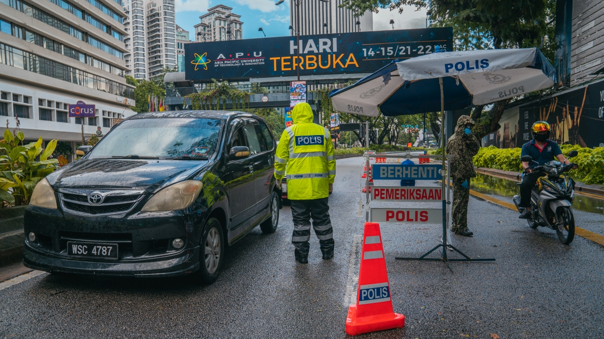

Movement Control Order
Movement Control Order(MCO), Enhanced Movement Controlled Order(EMCO) and Conditional Movement Control Order(CMCO) have reflected many things for the community to be practiced in the future. In social perspective, the question of inequality is magnified, the medical cost can be quite expensive for this virus treatment. Many people with low income resources have not been able to afford this cost, on the other hand, people with money can easily go for it.

However, in Malaysia, this matter can be considered to have been overcome. The Malaysia Government and Health Ministry have come up with a very systematic and organized plan to test and treat affected personnels from various classes. This inferred that small fry can be more efficient than the big talk; comparing Malaysia and the US.
Unwanted but a necessity for everyone
Economically, worldwide is currently experiencing economic deterioration. In Malaysia, a group of local citizens is having an economic breakdown: job-sacking, plummeted business sales and inability for operation. Many have lost their stable income and are unable to feed their families during the MCO period.
The government has launched stimulus packages to support those in need to survive their struggle during MCO. This can be seen as a great step or maybe a timebomb for the future as a massive fund of RM250 billion has been spent for this stimulus package. As the source of the fund is still a mystery, this can be bad news for Malaysia as they are already in a massive debt of RM1.17 trillion up until today.
In an environmental perspective, MCO caused factories and industries shutted down, which contributed to less carbon emission and pollution. Kuala Lumpur has witnessed a clear sky compared to before the MCO period, the sky was hazy and polluted. Nature is healing autonomously after being suppressed by human’s activities for a long time.This can be seen that Coronavirus and MCO have their own silver linings.
Furthermore, MCO has been tending the society to be more precautious and aware of the surrounding. Researchers concluded that Malaysia citizens may adapt to new life norms after the virus is shutted down thoroughly, encouraging them to take precautions to be outside in the public. Like Japan, the norms of practicing wearing masks in public has been adapted widely by the Japanese after the Spanish flu that hit them in 1918 to 1920.
MCO at first was not fully accepted by Malaysians, however after seeing the outcome and a clear result of its implementation. Malaysian slowly realised that this is one crucial step to vanish coronavirus completely. They may have reflected that it is important to keep self hygiene and sanitize themselves regularly from this crisis. The adaption of the norms may differ their culture from before.
Cashless payment would be highly preferred as they had assimilated this method and its importance. Less tendency to go out in the public out of fear the balance of the virus still remains in the public spaces, Malaysian would prefer indoor activities and less social interaction with strangers. The continuity of these rules until everything regarding the crisis is settled down is a necessity for a secured future without virus for Malaysia.

Fahmi Harum
At this time, I was a student doing my final project and was struggling to look for internship placement. Since Malaysia has been in lockdown state, I spent my time writing my opinion and building up my skills!